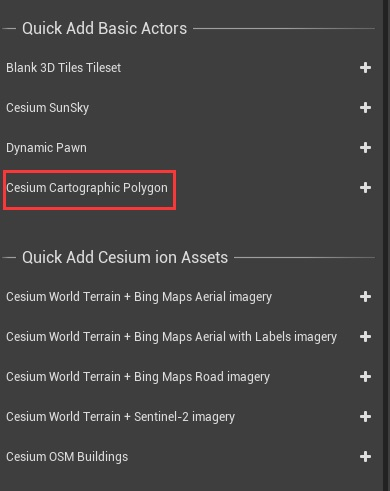
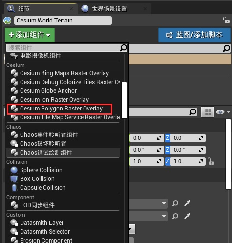
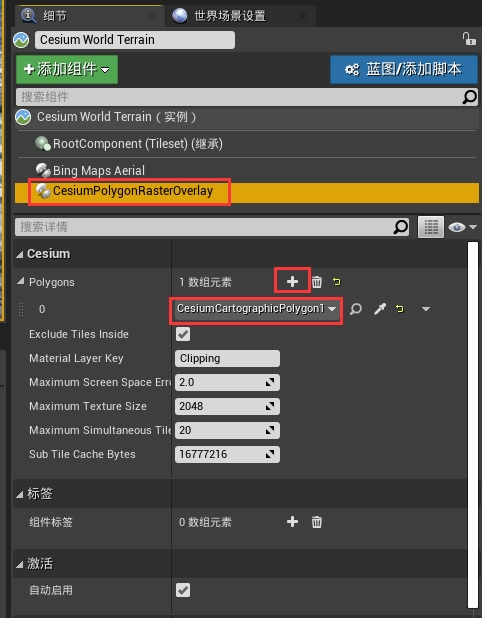

使用 CesiumCartographicPolygon actor，可以定义一个 tileset 的隐藏区域，或应用其他材质效果。CesiumCartographicPolygon 可以通过 Cesium PolygonRasterOverlay 组件添加到一个或多个 tilesets。

在这里，一个 CesiumCartographicPolygon 被用来隐藏 Cesium World Terrain 和 Cesium OSM Buildings，它们与 Aerometrex Denver Photogrammetry 重叠。
注意：虽然 CesiumCartographicPolygon 有助于基于材质的改变，如 clipping，但它们不影响物理。你仍然可以与 tileset 的隐藏部分发生碰撞。
第一步：添加 CesiumCartographicPolygon actor

可以修改多边形的节点（增加、删除、拖拽节点），修改线的颜色，以及地理位置

第二步：将 CesiumCartographicPolygon 连接到 tileset 数据
选择要将 CesiumCartographicPolygon 应用到的 tileset，比如 Cesium World Terrain，添加组件 CesiumPolygonRasterOverlay

关连 CesiumCartographicPolygon

可以手动刷新 tileset （Refresh Tileset）观看效果

- Exclude Tiles Inside： 是专为 clipping 使用。如果这个设置被启用，任何完全位于多边形内部的 tiles 都不会被加载，这可以提高性能。如果你使用这个多边形不是为了 clipping，要禁用这个设置。否则，多边形内的 tiles 将不会被渲染。
- Material Layer Key： 将多边形与特定部分的 tileset 的材质连接起来。如果你把这个键换成别的东西，它不会起作用，直到你创建一个使用新键的材质，并将该材质应用到 tileset。